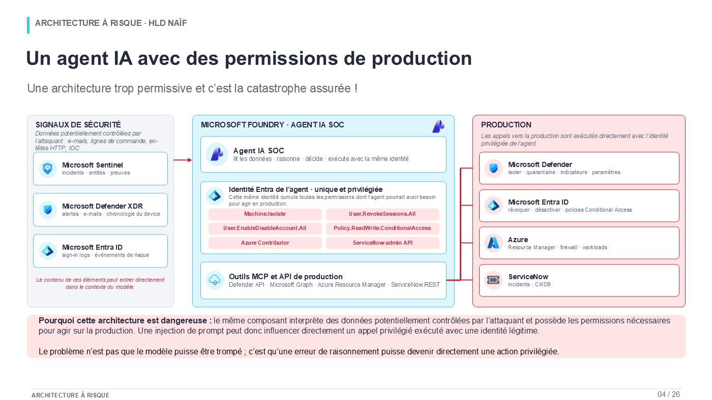
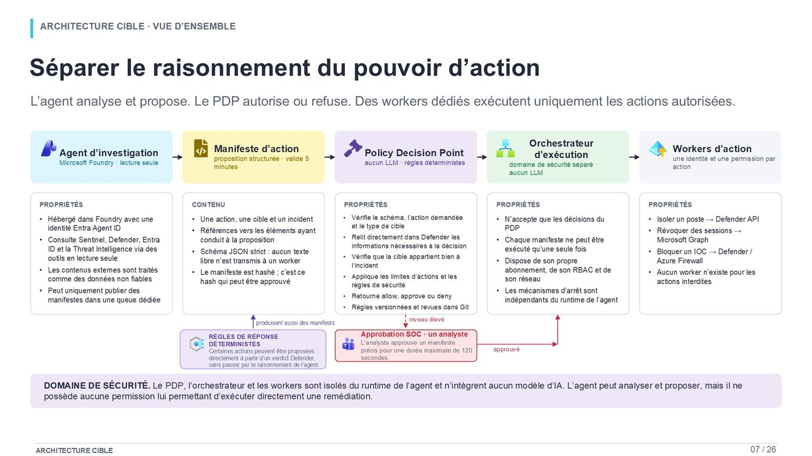
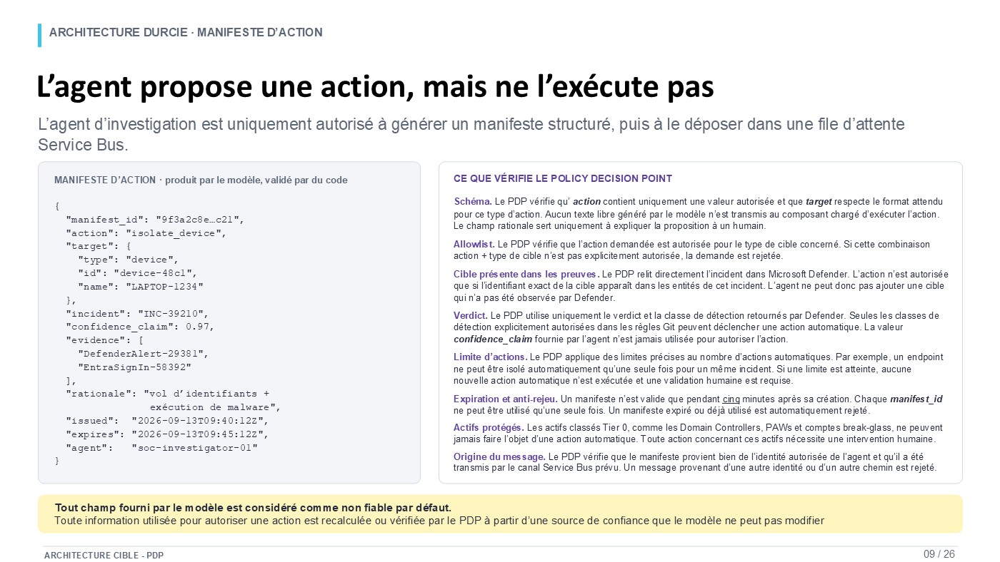
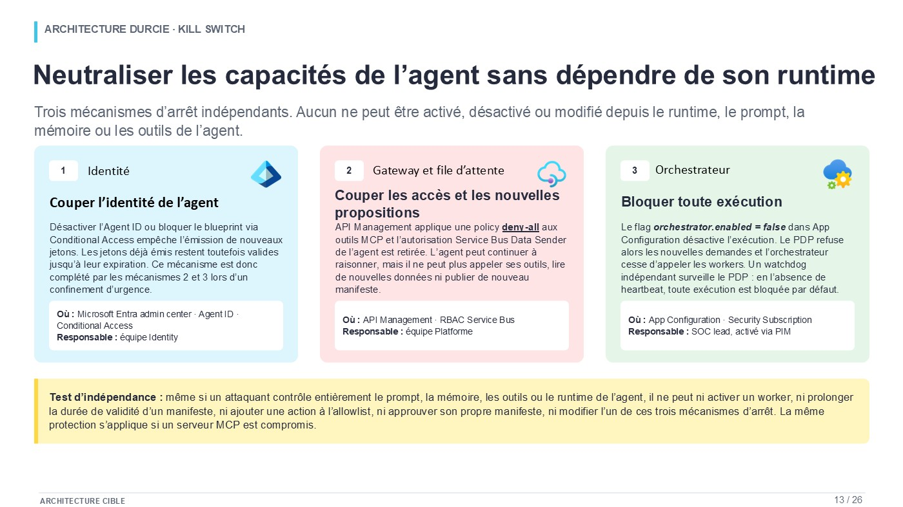
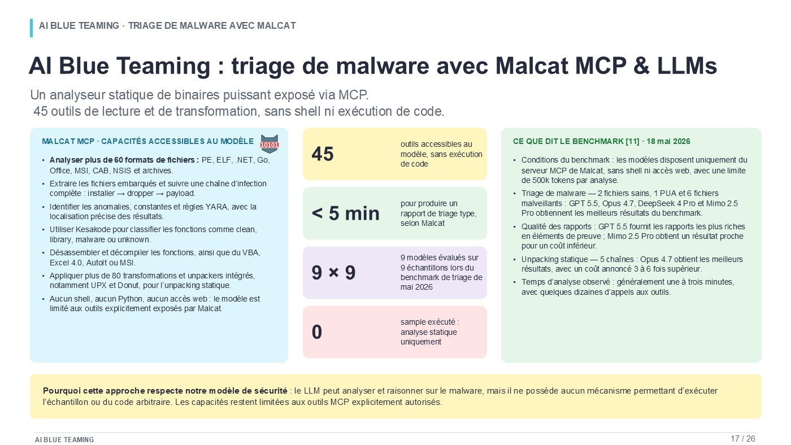
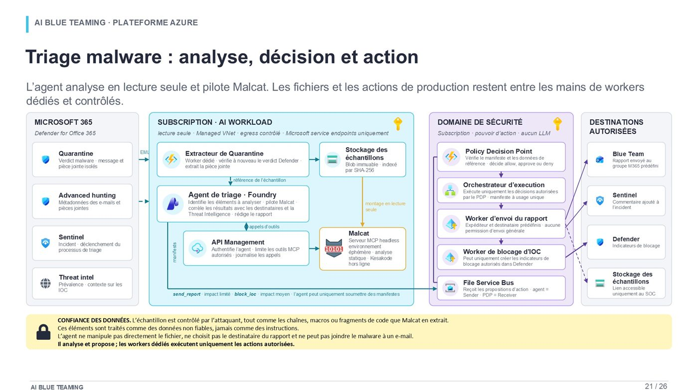

Deux cas d'usage, deux profils de ROI très différents
Le retour sur investissement n'est pas le même pour les deux équipes. Dans le scénario bancaire utilisé dans cet article, un SOC généraliste de dix personnes représente environ 1,02 M€ de coût direct du travail par an et reste volontairement à dix : l'IA y apporte de la capacité, de la vitesse et de la régularité plutôt qu'une réduction immédiate d'effectifs. Une Blue Team de dix personnes représente environ 1,36 M€ par an. Si près de la moitié de sa capacité part dans le triage et l'analyse de malware, et si l'automatisation absorbe l'essentiel de ce premier passage, le modèle opérationnel peut être rebâti autour de cinq profils seniors pour environ 700 k€ par an.
L'écart représente environ 656 k€ d'économie directe par an. Face à une hypothèse illustrative de 400 k€ de build et de 200 k€ d'OPEX annuel pour la plateforme IA, le gain net récurrent ressort à environ 456 k€ par an, ce qui rembourse le build en 10,5 mois environ. Sur trois ans, le scénario dégage près de 968 k€ de bénéfice net cumulé, soit environ 97 % de ROI sur les dépenses de plateforme, avant de valoriser la capacité gagnée côté SOC ou des incidents moins coûteux.
Ces chiffres ne sont pas une promesse générale sur l'IA et les effectifs. Le calcul est volontairement transparent et il dépend du profil de charge. Le SOC est une fonction généraliste : identité, endpoint, messagerie, cloud, réseau, escalades, suivi des incidents, souvent une couverture continue. La Blue Team du scénario, elle, concentre une grande part de son temps sur un processus bien plus répétable, l'analyse de malware. C'est cette différence de structure qui crée deux business cases.
L'article montre comment deux usages concrets, l'investigation SOC et le triage de malware, peuvent être conçus de façon assez sûre pour créer de la valeur opérationnelle, puis comment cette valeur se traduit dans des termes qu'un CISO, un CFO ou un comité d'investissement peuvent utiliser. Il ne défend ni l'idée que l'IA remplace les analystes, ni celle d'un simple projet de productivité.
Comment lire le ROI : économie budgétaire, capacité récupérée et réduction du risque
Les business cases d'automatisation cyber mélangent souvent trois bénéfices qui ne se comptabilisent pas de la même manière.
Le premier est l'économie budgétaire directe. Elle n'existe que si un poste est supprimé sans être remplacé ni transféré vers une autre fonction financée, ou si une dépense externe disparaît. Dans ce scénario, le passage de dix à cinq personnes dans la Blue Team crée ce type de bénéfice, à condition que la charge soit absorbée par le nouveau modèle.
Le deuxième est la capacité récupérée. Si dix analystes SOC deviennent 10 à 20 % plus productifs et que les dix postes sont conservés, la masse salariale ne bouge pas. La valeur existe pourtant : davantage d'incidents traités, des backlogs qui diminuent, des seniors qui récupèrent du temps, un recrutement futur qui peut être différé. Pour beaucoup de CISO, c'est un bénéfice SOC plus réaliste qu'une réduction immédiate d'effectifs.
Le troisième est la réduction du coût du risque. Une investigation plus rapide, une révocation de session plus précoce ou une meilleure détection peuvent réduire le coût d'un incident majeur. Cette valeur est potentiellement supérieure aux deux autres, mais elle est plus difficile à budgéter proprement ; elle est donc tenue à l'écart du calcul central du ROI.
Bénéfice net annuel = économies directes + recrutements évités + prestations externes évitées
+ capacité récupérée monétisée - OPEX de la plateforme
Payback simple = coût initial du programme / bénéfice net annuel
ROI à 3 ans = (bénéfices cumulés - coûts cumulés) / coûts cumulés
Une hypothèse importante : 50 % de charge malware ne veut pas dire 50 % de postes en moins
Une équipe de dix personnes qui consacre la moitié de sa capacité au malware porte environ cinq ETP de charge sur cette activité. Si l'automatisation supprime 80 % de ce travail, elle libère environ quatre ETP, pas cinq. Atteindre cinq personnes suppose une automatisation très poussée du premier passage répétitif et une réorganisation du reste : validation intégrée au flux, reporting automatisé, meilleure priorisation, et des profils conservés assez seniors pour absorber les exceptions.
| Part de la moitié « malware » automatisée | Capacité libérée sur 10 | Lecture prudente |
|---|---|---|
| 70 % | 3,5 ETP | Une équipe cible de 6 à 7 personnes est plus crédible. |
| 80 % | 4 ETP | Une équipe d'environ 6 personnes est envisageable selon la charge résiduelle. |
| 90 % | 4,5 ETP | Le modèle à 5 ou 6 devient plausible si le reporting et l'enrichissement sont eux aussi automatisés. |
| ≈ 100 % du premier passage répétitif | ≈ 5 ETP | La cible à 5 devient atteignable ; l'expertise humaine garde les exceptions. |
Le scénario de 10 à 5 est un target operating model, pas une règle arithmétique.
Permettre à un agent IA d'investiguer, corréler et assister les analystes SOC
Le premier cas d'usage part d'un problème opérationnel ordinaire. Un incident de sécurité tient rarement dans une seule console. Une alerte peut commencer dans Defender for Office 365, être corrélée dans Microsoft Sentinel, demander un passage dans Defender for Endpoint, puis l'analyse des connexions Entra ID, puis un enrichissement par la Threat Intelligence. L'analyste reconstruit une chronologie, décide si plusieurs événements appartiennent au même scénario, identifie les systèmes et identités touchés et choisit la prochaine action.
Une grande partie de ce travail correspond précisément à ce qu'un LLM sait faire : lire de gros volumes de texte, faire ressortir les événements pertinents, relier des entités, résumer une chronologie, proposer des hypothèses. L'agent peut aussi produire une synthèse homogène pour le ticket et préparer une liste d'actions candidates.
Pour une banque, cela ne veut pas dire laisser le modèle gérer le SOC. Cela veut dire construire un environnement où le modèle devient un analyste logiciel très rapide, dont le pouvoir s'arrête à l'analyse et à la proposition.
Exemple : vol potentiel d'identifiants
Prenons un incident qui pointe vers un vol d'identifiants pour un utilisateur. L'investigation doit vérifier les alertes Defender, les entités de l'incident Sentinel, la chronologie du poste, les connexions Entra ID, l'adresse IP source et la réputation de quelques indicateurs. Plusieurs actions sont sur la table à la fin : isoler le poste, révoquer les sessions, mettre l'e-mail d'origine en quarantaine, bloquer un IOC, ouvrir un incident ServiceNow.
L'agent accélère l'analyse parce qu'il peut parcourir ces sources avec des outils en lecture seule et synthétiser ce qu'il trouve. Le risque apparaît dès qu'on lui donne aussi le droit d'exécuter ces actions.
L'architecture « efficace » qui crée le mauvais problème
La manière la plus directe de construire un agent autonome consiste à lui donner une identité qui cumule des droits de lecture sur les sources de sécurité et des droits d'écriture sur les API de remédiation. L'agent lit, raisonne et exécute. Sur le papier, le flux est simple. En pratique, il réunit dans un même composant deux niveaux de confiance qui devraient rester séparés.

Le problème vient de la nature des données analysées. Un e-mail, une ligne de commande, un nom de fichier, un User-Agent HTTP, un IOC, et même une réponse renvoyée par un outil peuvent contenir du texte choisi par un attaquant. Dès que ce contenu entre dans le contexte du modèle, il peut influencer le raisonnement.
Une injection de prompt indirecte n'a donc pas besoin de « casser » le modèle. L'attaquant cherche simplement à introduire une instruction assez convaincante pour modifier le comportement du système.
Chemin d'attaque : l'e-mail devient une entrée de contrôle
- L'e-mail de phishing est détecté. Defender crée un incident et Sentinel déclenche le workflow d'investigation.
- L'agent lit le contenu complet. Le message, y compris du texte caché ou obfusqué, entre dans le même contexte que les preuves.
- Le contenu oriente le raisonnement. Il peut demander de ne pas isoler le poste, de consulter d'autres événements ou de transmettre des informations ailleurs.
- Dans une architecture naïve, l'identité privilégiée transforme l'erreur en action. Les appels sont authentifiés avec une identité légitime ; le runtime n'a pas eu besoin d'être compromis.
L'enjeu n'est donc pas de trouver un LLM impossible à injecter, mais de déplacer la frontière de confiance.
Séparer le raisonnement, l'autorisation et l'exécution
L'architecture cible introduit trois domaines logiques. L'agent d'investigation reste en lecture seule et consulte Sentinel, Defender, Entra ID et la Threat Intelligence. Une proposition d'action traverse une frontière de confiance explicite sous la forme d'un manifeste structuré. Un Policy Decision Point déterministe, sans LLM, décide si la proposition est autorisée, doit être approuvée par un humain ou doit être refusée.

Le pouvoir d'action reste dans un domaine de sécurité séparé. L'orchestrateur accepte les décisions valides du PDP et rien d'autre. Chaque worker a sa propre identité et le minimum de permissions pour sa seule tâche. Pour une action que l'organisation veut rendre impossible, il n'y a tout simplement pas de worker.
Cette approche permet d'accepter une réalité importante : le modèle peut faire une mauvaise proposition sans que le système s'effondre. La mauvaise proposition devient une entrée que la politique rejette.
Le manifeste d'action comme frontière de sécurité
Le manifeste est une structure de données, pas une phrase en langage naturel. L'action vient d'un enum fermé, la cible est typée, l'incident est référencé, les preuves sont identifiées, et la proposition porte un identifiant unique et une expiration courte. Un champ de justification peut être conservé pour les humains, mais aucun texte libre n'atteint le worker d'exécution comme instruction.

Le PDP revalide ensuite les informations importantes avec sa propre identité. Il peut vérifier que la cible appartient bien à l'incident, que le verdict Defender correspond à la policy, que l'actif n'est pas de classe Tier 0, que la limite d'actions est respectée et que le manifeste n'a jamais été consommé.
Cette distinction protège aussi contre les scores de confiance du modèle. Un agent peut annoncer 0,97 de confiance ; ce nombre reste une assertion. Il ne remplace ni un verdict ni un fait relu depuis un système de confiance.
Le modèle peut expliquer pourquoi il propose une action. Il ne doit pas devenir l'autorité qui décide que cette action est permise.
Human in the loop : approuver une action, pas l'agent
Pour les actions sensibles, le modèle prépare la proposition et un analyste l'approuve. Cette approbation reste liée au hash d'un manifeste précis, à une cible précise et à une fenêtre de validité courte. Elle n'ajoute jamais de permission à l'identité de l'agent.
Cela permet plusieurs niveaux d'automatisation. Une opération à impact limité peut passer automatiquement. Une isolation de poste ou une révocation de sessions peut exiger des conditions déterministes plus strictes. Une désactivation de compte ou une action sur un serveur peut exiger une approbation humaine. Les opérations critiques, comme modifier Conditional Access, RBAC, PIM, Azure Policy, les règles de détection ou le PDP lui-même, peuvent rester totalement hors périmètre.
Pourquoi les identités comptent autant que les prompts
Dans une architecture agentique, le blast radius se ramène à l'identité qui signe chaque appel. Un prompt parfait ne compense pas une identité trop puissante, donc l'agent de raisonnement, le PDP, l'orchestrateur et chaque worker ont des identités distinctes.
Un worker d'isolation ne reçoit que ce qu'il faut pour isoler un poste. Un worker de révocation de sessions ne peut pas désactiver le compte. Un worker de blocage d'IOC est limité à un périmètre de pare-feu prédéfini. Si l'un de ces composants est compromis, les dégâts sont bornés par son propre pouvoir.
Kill switch : couper le système sans demander son avis au modèle
Le runtime de l'agent ne doit pas contrôler son propre arrêt. La conception empile trois interrupteurs : désactiver l'identité de l'agent, couper l'accès aux outils et aux nouvelles propositions, puis bloquer l'exécution au niveau de l'orchestrateur. Un watchdog peut en plus passer en fail-closed quand le heartbeat du PDP disparaît.

Ce point est plus important qu'il n'y paraît. Même avec un contrôle total du prompt, de la mémoire ou d'un serveur MCP, un attaquant doit rester incapable de réactiver un worker, de prolonger la durée de vie d'un manifeste, de modifier la policy ou de désactiver le kill switch.
Tester en supposant que l'injection va réussir
La validation est un exercice de sécurité, pas une démonstration de qualité du prompt. Des instructions malveillantes sont placées dans les e-mails, les lignes de commande, les User-Agents, les IOC, les descriptions d'outils MCP et les réponses d'outils. Les rejeux, la substitution de cible et les faux scores de confiance sont testés aussi.
La mesure de succès n'est pas « aucune injection n'a fonctionné ». Elle devient : même avec le composant de raisonnement compromis, aucune action privilégiée ne part sans passer par les contrôles indépendants.
Observabilité : les refus deviennent des détections
Un système agentique bien conçu produit une télémétrie plus riche qu'un journal d'exécution. Il enregistre le manifeste, son hash, la décision du PDP, la règle exacte appliquée, l'approbateur humain quand il y en a un, l'identité du worker et la réponse du système cible.
Les refus sont particulièrement précieux. Un agent qui redemande une action interdite, cible un actif absent de l'incident ou annonce une confiance incohérente avec Defender est un signal en soi. Le SOC peut détecter les tentatives d'influencer l'automatisation, et pas seulement les attaques contre l'environnement.
ROI du SOC : ne pas confondre productivité et économie de postes
Le modèle économique du SOC est volontairement prudent : les dix personnes restent. L'équipe modélisée compte quatre analystes L1 à 55 k€, trois analystes L2 à 68 k€, deux seniors à 84 k€ et un SOC lead à 100 k€, soit 692 k€ de salaires fixes. Avec la structure Eurostat, où les coûts non salariaux représentent 32,3 % du coût total du travail en France, le coût direct annuel ressort à environ 1,02 M€. [3]
Microsoft a mesuré un gain moyen de 22 % en vitesse et de 7 % en précision dans un essai randomisé auprès de 147 professionnels de la sécurité utilisant Copilot for Security sur les tâches testées. [4] Appliquer 22 % à tout un SOC bancaire serait abusif. Le chiffre reste une borne haute utile pour la valeur de la capacité récupérée.
| Gain net réellement capté | Valeur annuelle sur 1,02 M€ | Comment le lire |
|---|---|---|
| 10 % | ≈ 102 k€ | Capacité analyste récupérée, pas nécessairement une économie comptable. |
| 15 % | ≈ 153 k€ | Peut absorber la croissance des alertes ou différer un recrutement. |
| 20 % | ≈ 204 k€ | Gain important si les workflows sont intégrés et adoptés. |
| 22 % | ≈ 225 k€ | Illustration du résultat Microsoft ; pas une hypothèse budgétaire à reprendre telle quelle. |
Face au comité exécutif, il faut distinguer la valeur économique de l'économie de trésorerie. Si les dix analystes restent, 153 k€ de capacité récupérée ne sortent pas de la masse salariale. Si cette capacité évite un onzième recrutement, réduit les astreintes ou remplace une partie d'un contrat MSSP, une part de cette valeur devient budgétaire.
Blue Team : déléguer le triage malware sans déléguer l'autorité
Le deuxième cas d'usage a un profil économique différent parce que le travail est plus concentré. Une Blue Team peut passer beaucoup de temps sur des échantillons : identifier le format, inspecter les chaînes, relever les anomalies, suivre les références, vérifier les règles YARA, décompiler quelques fonctions, extraire des IOC, comparer l'échantillon à des familles connues et rédiger un premier rapport.
Ce premier passage est technique, et il suit souvent une méthode répétable. Un modèle connecté à un analyseur spécialisé peut automatiser une bonne part de la navigation et de la synthèse sans recevoir un environnement d'exécution généraliste.
Malcat MCP : donner des outils d'analyse, pas un shell
Malcat expose via MCP un ensemble d'outils de lecture et de transformation. Le modèle peut inspecter de nombreux formats, suivre les fonctions, lire les chaînes et les anomalies, exploiter les résultats YARA, désassembler, décompiler et appliquer certains unpackers statiques.

La contrainte compte autant que la capacité. Dans le scénario du deck, l'agent n'a pas de shell, pas de Python arbitraire et pas d'accès Internet libre. Il n'exécute pas l'échantillon. Le modèle peut être fort en analyse sans devenir un environnement de détonation.
Le benchmark publié par Malcat le 18 mai 2026 teste neuf modèles et montre une valeur déjà importante pour le triage, avec des résultats plus contrastés sur les tâches lourdes de reverse engineering et d'unpacking. [7] Son auteur précise qu'il ne s'agit pas d'une étude scientifique au sens académique. Ces résultats illustrent la faisabilité ; ils ne garantissent pas une réduction d'effectifs.
Kesakode et Malpedia : enrichir sans sur-attribuer
Kesakode rapproche les fonctions d'un binaire d'une base de connaissances et estime une famille probable. L'agent peut utiliser ce signal pour concentrer son analyse sur les fonctions suspectes. Malpedia apporte ensuite du contexte documenté sur les familles, les alias et les groupes qui leur sont historiquement associés.
Cette chaîne demande de la prudence. Une similarité de fonction n'est pas une preuve d'attribution, et une association historique dans Malpedia ne démontre pas que l'échantillon appartient à la campagne d'un acteur précis. Le rôle du modèle est de structurer ces signaux pour l'analyste, pas de transformer une corrélation en certitude.
Conserver le fichier et les actions dans un pipeline contrôlé
Le malware lui-même est une donnée hostile. L'agent ne doit pas choisir où il est téléchargé, envoyé ou exécuté. L'architecture prévoit un worker d'extraction dédié depuis la quarantaine, un stockage immuable indexé par SHA-256, un montage en lecture seule dans l'environnement d'analyse et des sorties contrôlées.

L'agent rédige un rapport et en demande l'envoi via un manifeste. Le worker d'envoi a un expéditeur et un destinataire prédéfinis, et le fichier malveillant n'est jamais attaché. Un autre manifeste peut proposer un blocage d'IOC, mais la politique est évaluée d'abord et un worker au périmètre étroit exécute l'opération.
Le triage ne remplace pas le reverse engineering
Cette nuance est essentielle pour le modèle d'effectifs. L'IA peut automatiser une grande partie du premier passage : collecte des indices, navigation dans le binaire, synthèse, rapport, rapprochement avec des familles et des signatures. Elle ne supprime pas le besoin d'experts capables d'expliquer un packer inconnu, une technique anti-analyse, un loader nouveau, un comportement conditionnel ou une campagne ciblée.
Les cinq personnes restantes ne sont donc pas « cinq opérateurs qui valident ChatGPT ». Elles deviennent une équipe plus senior : elles prennent les cas difficiles, valident les conclusions qui comptent, entretiennent la qualité des détections, améliorent les prompts et les outils, conduisent le threat hunting et interviennent quand le workflow automatique ne suffit plus.
ROI de la Blue Team : passer de la capacité récupérée à une réduction de coût effective
La Blue Team initiale du modèle compte deux Detection Engineers à 84 k€, deux Threat Hunters à 90 k€, deux profils DFIR à 90 k€, deux Cloud/Endpoint Security Engineers à 90 k€, un Malware Analyst à 95 k€ et un Blue Team Lead à 115 k€. Cela représente 918 k€ de salaires fixes, soit environ 1,36 M€ de coût direct du travail avec la même méthode.
L'équipe cible conserve un Detection Engineer, un Threat Hunter, un spécialiste DFIR, un Malware Analyst / Reverse Engineer et le Blue Team Lead. Les salaires fixes totalisent 474 k€, soit environ 700 k€ de coût direct du travail.
| Modèle | Effectif | Salaires fixes | Coût direct du travail estimé |
|---|---|---|---|
| Blue Team initiale | 10 | 918 k€ | ≈ 1,36 M€ |
| Blue Team cible | 5 | 474 k€ | ≈ 700 k€ |
| Écart | -5 | -444 k€ | ≈ -656 k€ / an |
Coût direct du travail de la Blue Team, avant et après
Le ROI complet du programme
Le scénario central utilise deux hypothèses de plateforme volontairement séparées des benchmarks de marché : 400 k€ de build initial et 200 k€ de coût récurrent annuel. Le build couvre l'intégration, les identités, le PDP, l'orchestration, les workers, l'observabilité, les tests et l'industrialisation. L'OPEX est une enveloppe unique pour le runtime des modèles, l'infrastructure, l'exploitation, le monitoring, les évaluations continues et la maintenance.
| Élément | Année 1 | Année 2 | Année 3 |
|---|---|---|---|
| Économie Blue Team | +656 k€ | +656 k€ | +656 k€ |
| OPEX plateforme | -200 k€ | -200 k€ | -200 k€ |
| Build initial | -400 k€ | ||
| Flux net annuel | +56 k€ | +456 k€ | +456 k€ |
| Cumul | +56 k€ | +512 k€ | +968 k€ |
Bénéfice net cumulé sur trois ans
Le bénéfice net cumulé atteint environ 968 k€, soit environ 97 % de ROI sur trois ans rapporté au coût du programme. L'année 1 est proche de l'équilibre parce que le build s'y paie ; les années 2 et 3 ajoutent chacune 456 k€.
Sensibilité : et si le redimensionnement est moins agressif ?
Le scénario à cinq personnes est le scénario cible. Un CISO devrait aussi tester au moins deux variantes moins agressives. Si la plateforme ne libère que trois ou quatre postes, le business case peut rester positif avec un payback plus long.
| Équipe cible | Économie annuelle indicative | Après 200 k€ d'OPEX | Lecture |
|---|---|---|---|
| 7 personnes | ≈ 390 k€ | ≈ 190 k€ net | Business case positif, payback plus long. |
| 6 personnes | ≈ 523 k€ | ≈ 323 k€ net | Économie significative en gardant plus de capacité humaine. |
| 5 personnes | ≈ 656 k€ | ≈ 456 k€ net | Scénario cible, payback d'environ 10,5 mois. |
Cette sensibilité est importante. Le programme n'est pas un échec si l'organisation finit par garder six personnes au lieu de cinq. L'arbitrage porte sur la résilience, le volume de malware, la complexité moyenne des échantillons, les besoins d'astreinte et la part d'expertise critique que la banque veut garder en interne.
Ce que le calcul central ne valorise pas
Le ROI central exclut volontairement le gain de productivité du SOC. Il exclut aussi la moindre dépendance à un MSSP, les recrutements futurs évités, la baisse des astreintes et les gains de MTTR, et il ne monétise pas un incident grave moins coûteux.
Autrement dit, le calcul est prudent sur les bénéfices annexes et agressif sur l'hypothèse de staffing Blue Team. C'est la façon la plus transparente de le présenter à un comité d'investissement.
Pour une banque, la vitesse de réponse et l'auditabilité ont aussi une valeur
IBM indique dans son rapport 2026 un coût moyen mondial de violation de données de 4,99 M$, et environ 6,3 M$ pour les services financiers. La même étude rapporte 1,93 M$ d'économie moyenne dans les organisations qui font un usage intensif de l'IA et de l'automatisation en sécurité, par rapport à celles qui n'en utilisent pas. [5] Ce sont des observations agrégées ; elles ne peuvent pas être attribuées à l'architecture décrite ici.
Elles donnent tout de même un ordre de grandeur. Réduire de quelques minutes ou quelques heures le temps nécessaire pour isoler un endpoint compromis ou révoquer une session volée peut valoir bien plus que le temps d'analyste économisé sur cette seule action.
Le secteur financier a en plus une contrainte d'auditabilité forte. DORA impose aux entités financières européennes un processus de gestion des incidents TIC couvrant la détection, la gestion, l'enregistrement, la catégorisation et la classification, et le suivi. [6] Une plateforme qui journalise chaque proposition, décision, approbation et exécution apporte en plus une valeur de gouvernance.
Les principes communs aux deux cas d'usage
Raisonner n'est pas autoriser
Le modèle peut être très bon en analyse sans être l'autorité qui permet l'exécution.
Des outils plus étroits que le langage naturel
Des actions typées et des workers spécialisés bornent le risque bien mieux qu'un outil privilégié généraliste.
Le ROI dépend du profil de charge
Un SOC généraliste gagne surtout de la capacité. Une équipe spécialisée concentrée sur un workflow automatisable peut être redimensionnée.
L'expertise humaine change de place
Les humains quittent le premier passage répétitif pour l'investigation complexe, le contrôle, le threat hunting et la conception de détections.
La valeur dépend du travail que l'on automatise
Ces deux cas montrent pourquoi « l'IA dans la cybersécurité » est une catégorie trop large. La valeur dépend de la nature du travail que l'on automatise.
Dans le SOC, l'IA sert d'abord à augmenter le levier de dix analystes : meilleure corrélation, investigations plus rapides, résumés plus homogènes, moins de temps passé à naviguer entre les consoles. L'équipe reste à dix parce que sa valeur tient aussi à sa largeur de couverture et à sa capacité à gérer l'imprévu.
Dans la Blue Team, le profil de charge peut être différent. Si cinq ETP partent dans le triage malware et que l'essentiel de ce premier passage devient automatisable, le modèle opérationnel peut être rebâti autour de cinq profils plus seniors. C'est là que la capacité récupérée devient une économie budgétaire directe.
L'intérêt économique ne doit jamais conduire à donner au modèle plus de pouvoir que nécessaire. Plus l'automatisation pèse, plus il faut séparer le raisonnement du pouvoir d'action, revalider les faits critiques de façon indépendante, cloisonner les identités et garder des interrupteurs d'arrêt externes.
L'objectif n'est pas un agent qui ne se trompe jamais. C'est une architecture dans laquelle une erreur du modèle reste une erreur d'analyse et ne devient jamais, d'elle-même, une action privilégiée.
Sources, méthode et hypothèses
- Deck source, SOC & Blue Teaming : Automatisation avec l'IA. Les architectures, les scénarios d'injection de prompt, le manifeste d'action, le PDP, les identités, les kill switches, les scénarios de validation et le cas d'usage Malcat et Kesakode proviennent de l'étude de cas de l'auteur, téléchargeable plus haut.
- Robert Half, Guide des salaires 2026, Paris. Expert cybersécurité : 54 600 à 84 000 €, médiane 68 250 € ; DSSI : médiane 136 500 €. Source.
- Eurostat, coûts horaires du travail, données 2025 publiées le 31 mars 2026. Les coûts non salariaux représentent 32,3 % du coût total du travail en France. Le calcul « salaire / 0,677 » utilisé ici est une approximation de modélisation, pas un calcul de paie. Source.
- Microsoft Office of the Chief Economist. Essai contrôlé auprès de 147 professionnels de la sécurité : 22 % plus rapides et 7 % plus précis avec Copilot for Security sur les tâches testées. Source.
- IBM, Cost of a Data Breach 2026. Coût moyen mondial : 4,99 M$ ; IBM rapporte aussi 1,93 M$ d'économie moyenne associée à un usage intensif de l'IA et de l'automatisation en sécurité. Rapport.
- DORA, règlement (UE) 2022/2554. Article 17 : processus de gestion des incidents liés aux TIC. EUR-Lex.
- Malcat, 18 mai 2026. « Benchmarking LLMs for malware triage and static unpacking with Malcat ». L'auteur précise qu'il ne s'agit pas d'un benchmark scientifique académique. Source.
Hypothèses propres au business case. La composition exacte des équipes, les salaires rôle par rôle, la part de 50 % de la charge Blue Team consacrée au malware, le passage de 10 à 5 personnes, le build à 400 k€ et l'OPEX à 200 k€ par an sont des hypothèses illustratives du scénario. Elles doivent être remplacées par les données réelles de l'organisation avant toute décision. Les schémas du deck sont des architectures conceptuelles proposées par l'auteur, pas des architectures de référence Microsoft.